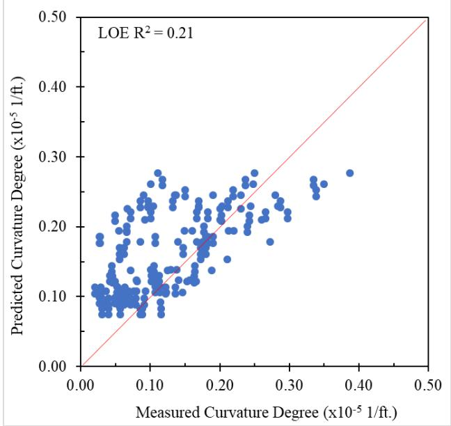
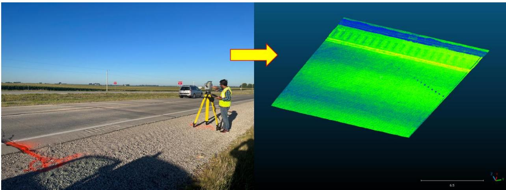
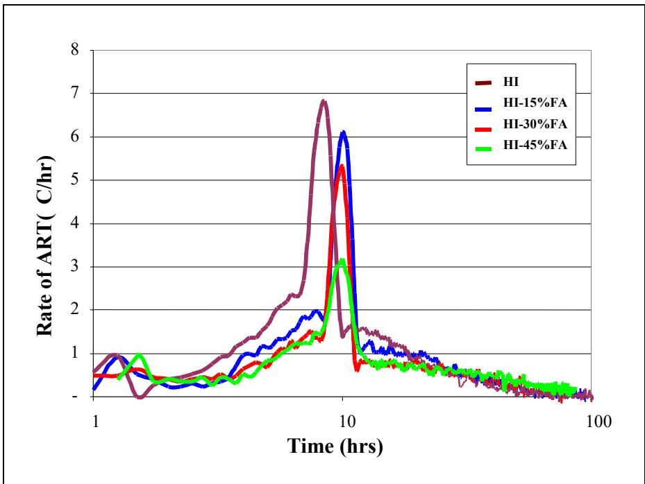
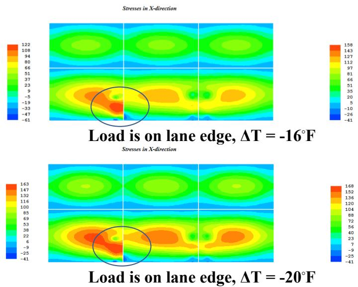
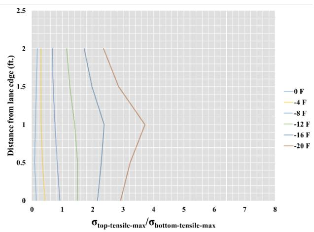
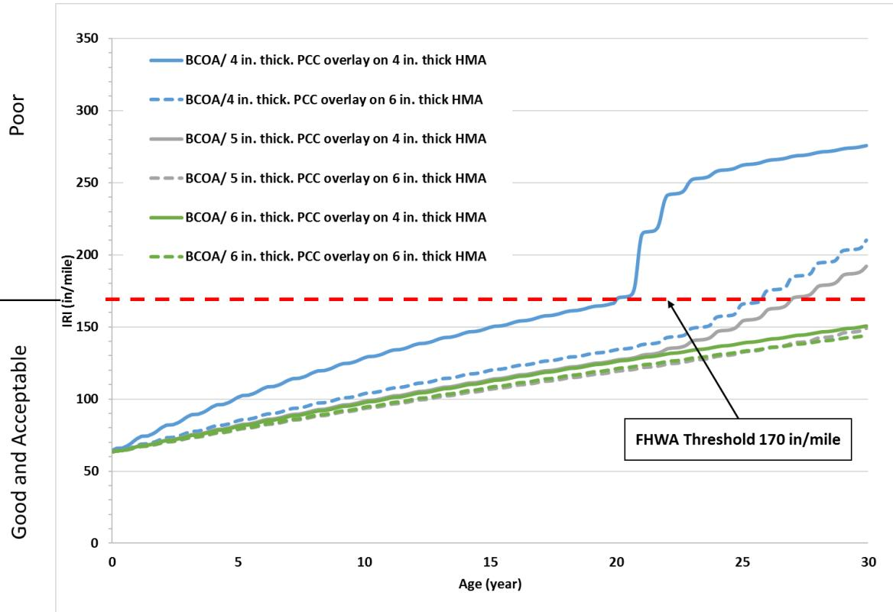

Pavement Warping
Pavement Warping is a specific moisture-driven phenomenon within the broader category of Curling and Warping, defined as the transient vertical displacement of concrete slabs caused by differences in moisture gradients between the top and bottom surfaces [1]. Unlike curling, which is primarily driven by thermal gradients, warping results from differential drying—the top of the slab dries faster than the bottom, causing the slab to warp upward at the edges. Although both behaviors involve environmentally induced slab curvature that can lead to fatigue failures under traffic loading [1], combined with curling, repeated warping can lead to fatigue cracking in PCC pavements [1].
Sources (12)
Statistical Analysis Of Warping
Statistical analysis using one-way ANOVA identifies specific design, construction, and environmental variables that significantly impact warping magnitude, which allows for the development of multiple linear regression models to predict these behaviors [2].

Multiple linear regression models’ prediction results for LTPP sections: (a) curvature IRI, (b) deflection, (c) deflection ratio, (d) degree of curvature [2]Factors Affecting Warping: Mix Design and Materials
The drying shrinkage of a concrete mix is influenced by several factors, including the W/cm ratio, where higher ratios increase drying shrinkage, lower ratios increase autogenous shrinkage, and moderate ratios are considered optimal [1]. Additionally, Iowa field studies showed that sites with more cement and less fly ash exhibited higher warping [1], while high-strength concrete mixes have been observed to exhibit higher warping behavior compared to low-strength mixes, likely due to increased stiffness and reduced ability to accommodate shrinkage strains without stress accumulation [2]. Regarding mix design, QMC mixes reduced warping compared to other mix types, a result attributed to optimized paste content and w/cm ratio.
The use of supplementary cementitious materials also affects these properties; fly ash replacement generally reduces water demand, allowing it to function as a water-reducing agent that improves flowability without increasing warping risk from excess mix water [3], whereas slag replacement tends to increase water demand for a given consistency compared to OPC, which may influence moisture gradients if not properly managed during mix design [3]. To address aggregate concerns, the Iowa Pore Index Test serves as a screening protocol for aggregates susceptible to D-cracking by measuring water absorption rates under pressure alongside chemical testing, addressing the risk of aggregates that remain critically saturated during drying cycles [4].
Environmental and Construction Factors
Several factors influence warping, including the moisture gradient through the slab depth related to relative humidity exposure, as well as base drainage, where bases with good drainage result in less warping [1]. Weather during construction also plays a role, as higher ambient temperatures, lower RH, and higher winds increase warping [1]. Pavement temperature typically exceeds ambient temperature and follows a similar pattern but with a one- to two-hour lag [5], and slab thickness influences the timing of peak temperature responses; thicker concrete slabs experience delayed peak temperatures because they require more time to reach thermal equilibrium with ambient changes [6]. Furthermore, daytime paving results in positive temperature gradients prior to hardening, followed by cooling at the top surface after hardening during nighttime, which can induce permanent warping [5].
 Marshalltown site—hygrochron relative humidity measurements [5]
Marshalltown site—hygrochron relative humidity measurements [5]
Seasonal variations and timing further affect these dynamics. Spring and fall simulations showed higher stresses due to larger thermal and moisture gradients along the slab depth, reducing the minimum difference between concrete strength and stress as low as 6.2 psi [3]. For LTPP sections, warping was highest in fall and lowest in spring, which is consistent with seasonal moisture patterns. Additionally, warping behavior is typically more pronounced in the morning hours compared to noon or late afternoon, reflecting cumulative moisture gradients that develop during nighttime cooling and drying periods [2].
 Diurnal slab curvature [2]
Diurnal slab curvature [2]
Measurement Techniques and Instrumentation
Warping is typically assessed alongside curling using LiDAR, FWD, or temperature/moisture sensor arrays embedded in the slab [1]. Inclinometer profiling systems capture warping-induced deflections by measuring pavement surface elevation at multiple lateral offsets from the free edge and longitudinal joints, enabling quantification of differential vertical movement across the slab [7], while Linear variable distance transducers (LVDTs) provide absolute vertical displacement measurements at strategic slab locations, including corners, mid-slabs, and free edges, to directly quantify warping-induced deflection magnitudes over time [7]. Additionally, DEMEC caliper measurements using stainless steel discs attached to the pavement surface characterize relative joint movement caused by warping and curling, with readings referenced to initial post-construction values [7]. For more advanced analysis, LiDAR point cloud data can be processed by fitting quadratic equations to slab surfaces to calculate deflections along longitudinal, transverse, and diagonal directions, enabling 3D visualization of overall curvature shapes; this method allows for the extraction of warping degrees at specific points or areas and facilitates direct comparison among different slabs through color distribution mapping [1]. The degree of curvature serves as a specific quantitative indicator for warping magnitude, derived from second-order polynomial fitting of profile data to isolate slab deflection from overall grade [2].

Field LiDAR scanning and 3D slab profile [2]Regarding environmental loading, field data indicate a linear relationship between the actual measured temperature difference and the equivalent temperature difference associated with slab displacement under pure environmental loading [5]. The shrinkage equivalent temperature difference has been found to exert a more significant influence on warping behavior than the hourly or total equivalent temperature differences, indicating that moisture-driven shrinkage is a dominant factor in slab deformation [2]. Slab curvature behavior can be simulated using 3-D finite element models (EverFE 2.24) to account for permanent curling and warping [5]. To monitor these effects, strain gages placed at the top and bottom of concrete slabs capture opposing deformation behaviors under environmental loads; for instance, when tension develops at the top surface during upward curling, compression is simultaneously induced at the slab bottom [6]. Typical strain values measured in response to environmental loads range from -150 to +200 microstrain, with peak tensile strains occurring at the slab top during upward curvature events [6], and strain gage length should be three to five times the maximum aggregate size of the concrete mix to ensure precise capture of strain values within the matrix [6]. Finally, loss of support values back-calculated from FWD measurements typically range from 0.7 to 1.7 for natural subgrades and 0.7 to 1.3 for granular subbases, which are higher than the default values of 1.0 and 0.0 respectively used in SUDAS design procedures [8].
 Strain measurement: curling and warping [6]
Strain measurement: curling and warping [6]
Internal Curing Effects on Warping
Internal Curing Effects on Warping (IHRB TR-746)
Internal curing reduces warping by buffering moisture gradients through the saturated LWFA reservoirs. At two Iowa field sites:
- Moisture gradients consistently lower in IC sections than CC sections across all measurement periods
- Winter morning movement: 0.9 mm IC vs. 2.2 mm CC (Washington County); 1.1 mm IC vs. 3.3 mm CC (Winneshiek County)
- Regression models: IC section deflection = -0.24 + 0.36T + 19.75M + 13.55TM; CC section deflection = -2.41 + 0.84T + 200.19M (where T = temperature differential, M = moisture differential)
- The moisture coefficient in the CC model (200.19) is ~10× larger than in the IC model (19.75), confirming the LWFA buffering effect on moisture-driven warping [9]
Replacing approximately 20% of normal-weight fine aggregate with saturated lightweight fine aggregate provides internal water reservoirs that keep early-age concrete internal moisture above 90%, thereby reducing shrinkage and associated warping risks. [10]
Internal curing decreases the modulus of elasticity (MOE) of concrete, which leads to reduced stresses under shrinkage strains and consequently lowers warping magnitude. [10]
Mitigation and Optimization Strategies
To mitigate warping, several material and construction strategies can be employed, such as using fine aggregates with coarser particles and lower water absorption, utilizing cement with lower C3A and alkali content, incorporating supplementary cementitious materials (SCMs) such as fly ash, optimizing the w/cm ratio (moderate preferred), ensuring adequate base drainage, and considering construction timing to minimize early-age drying exposure [1]. Additionally, post-construction wetting cycles can help reduce warping [1], while Quality Management Concrete (QMC) mix designs reduce warping magnitude relative to pre-QMC mixes by optimizing paste content and water-cementitious ratio, thereby minimizing shrinkage potential [2]. Nighttime paving is recommended as an alternative strategy because it reduces permanent warping by preventing the temperature gradient change before and after concrete hardening [5]. Furthermore, structural synthetic fibers at 4 lb/yd³ are utilized in bonded concrete overlays on asphalt (BCOAs) to increase fatigue capacity, reduce overlay thickness, and control differential slab movement caused by curling and warping [11], and pavements constructed with tied Portland cement concrete (PCC) shoulders exhibit significantly lower warping magnitudes compared to those with untied asphalt or gravel shoulders, as the rigid shoulder connection restrains slab edge movement [2].
Modeling and analysis of these phenomena are supported by specialized tools; for instance, the HIPERPAV program models warping by incorporating environmental inputs such as air temperature, relative humidity distribution conditions, and wind speed alongside structural parameters like slab thickness and joint spacing [3]. Consequently, the HIPERPAV predictive tool is utilized to analyze daily project conditions that affect parameters influencing warping [5].

Effect of fly ash on binary cement concrete heat signature [3]Design Implications and Structural Performance
Internal tensile stresses induced by warping are magnified under repetitive vehicle loading and can lead to transverse cracking, particularly when restraints such as dowel bars or base friction limit slab deformation. [6]
 Stresses exerted due to PCC curling and warping: tensile stress exerted at the top of the PCC slab with upward curvature (top), and tensile stress exerted at the bottom of the PCC slab with downward curvature (bottom) [6]
Stresses exerted due to PCC curling and warping: tensile stress exerted at the top of the PCC slab with upward curvature (top), and tensile stress exerted at the bottom of the PCC slab with downward curvature (bottom) [6]
Concrete pavements with typical joint spacing of 20 ft experience relatively higher levels of curling and warping stresses compared to slabs with 15 ft or shorter joint spacing. Additionally, concrete mixes containing more coarse aggregates and less paste result in reduced warping magnitude due to lower shrinkage potential. [1]
Phase II Field Study Findings (IHRB TR-749, 2023)
The Phase II study quantified warping effects alongside curling across 36 Iowa sites:
- Moisture gradient effects: The shrinkage equivalent temperature difference (ΔT_Shrinkage) had a greater impact on warping behavior than the hourly temperature component
- The total equivalent temperature difference approaching 0°F corresponded to minimal warping, validating the -10°F MEPDG default [2]
Internal curing allows for a reduction in minimum pavement thickness from 8 and 10 inches to 7 inches while maintaining required performance limits over a 30-year design period. [10]
 7 in. thick conventionally and internally cured pavement [10]
7 in. thick conventionally and internally cured pavement [10]
Widened slabs paired with tied PCC shoulders exhibit higher top-to-bottom tensile stress ratios compared to regular-sized slabs with full-depth tied shoulders, increasing the potential for longitudinal cracking near transverse joints. [12]
 Tied PCC shoulder with widened slab – top tensile stress distribution for four temperature load cases [12]
Tied PCC shoulder with widened slab – top tensile stress distribution for four temperature load cases [12]
Skewed joint configurations in JPCP pavements demonstrate a higher potential for longitudinal cracking initiation compared to rectangular joint designs. [12]
 Top view of skewed joint [12]
Top view of skewed joint [12]
A four-axle truck configuration with axle loads positioned near the transverse edges of adjacent slabs creates critical loading scenarios that significantly increase top-to-bottom tensile stress ratios. [12]

Three-axle truck with 23 ft axle spacing with both axle groups placed on adjacent slabs (truck on slab edge) – top tensile stress distribution for four temperature load cases [12]Top-down longitudinal cracking in concrete pavements typically initiates within 2 to 4 feet from the slab edge, parallel to traffic direction. [12]
 Failure mechanism for longitudinal cracking from field investigation [12]
Failure mechanism for longitudinal cracking from field investigation [12]
Regular-sized slabs (12 ft wide) with HMA or granular shoulders produce higher top-to-bottom tensile stress ratios than widened slabs (14 ft wide) with similar shoulder types. [12]

Widened Slab with Granular Shoulder [12]In thin concrete overlays (4-inch to 6-inch), longer transverse joint spacing increases the risk of mid-panel cracking or rougher pavements due to curling and warping, whereas shorter spacings like 6-foot designs provide better performance than 12-foot to 15-foot alternatives. [11]
 12-foot joint spacing concrete overlays using BCOA-ME design predicted thickness versus maximum allowable percentage of cracked slabs [11]
12-foot joint spacing concrete overlays using BCOA-ME design predicted thickness versus maximum allowable percentage of cracked slabs [11]
The ratio of slab length to radius of relative stiffness (L/ℓ) serves as a key indicator for joint activation behavior, with optimal designs targeting an L/ℓ between 4 and 7 to balance timely joint activation against performance risks from warping. [11]
 Joint activation vs. L/ℓ and joint spacing for Mitchell County concrete overlay test sections [11]
Joint activation vs. L/ℓ and joint spacing for Mitchell County concrete overlay test sections [11]
For 4-inch to 6-inch thick bonded concrete overlays on asphalt (BCOAs), placing them on thicker underlying asphalt concrete pavements significantly improves performance and extends service life. [11]
Unbonded concrete overlays on existing concrete (UBCOCs) with 12-foot to 20-foot joint spacing and thicknesses of 5-inch to 6-inch can achieve a service life of approximately 30 years before reaching an International Roughness Index (IRI) threshold of 170 in./mi. [11]

20-foot joint spacing concrete overlays Pavement ME Design predicted IRI values versus age: BCOA [11]Related Concepts
- pavement-curling (temperature-driven counterpart)
- drying-shrinkage
- moisture-gradient-effects
- Curling and Warping
References
- H. Ceylan, S. Yang, K. Gopalakrishnan, S. Kim, P. Taylor, and A. Alhasan, "Impact of Curling and Warping on Concrete Pavement," Institute for Transportation, Ames, IA, Rep. TR-668, 2016. [Online]. Available: https://www.intrans.iastate.edu/wp-content/uploads/2018/03/curling_and_warping_impact_on_concrete_pvmt_w_cvr.pdf
- K. Tian, D. King, B. Yang, S. Kim, A. Alhasan, and H. Ceylan, "Impact of Curling and Warping on Concrete Pavement: Phase II," Program for Sustainable Pavement Engineering and Research (PROSPER), Iowa State University, Ames, IA, Rep. TR-749, 2023. [Online]. Available: https://intrans.iastate.edu/app/uploads/2023/06/Impact_of_Curling_and_Warping_Phase_II_w_cvr.pdf
- K. Wang and Z. Ge, "Evaluating Properties of Blended Cements for Concrete Pavements," Department of Civil, Construction and Environmental Engineering, Iowa State University, Ames, IA, 2003. [Online]. Available: https://www.intrans.iastate.edu/wp-content/uploads/2018/03/blended_cements-1.pdf
- J. Gross, J. Weiss, T. Ley, P. Taylor, N. Weitzel, T. Van Dam, G. Smith, and C. Jones, "Performance-Engineered Concrete Paving Mixtures," National Concrete Pavement Technology Center, Iowa State University, Ames, IA, Rep. TPF-5(368), 2022. [Online]. Available: https://www.intrans.iastate.edu/wp-content/uploads/2023/04/performance-engineered_concrete_paving_mixtures_w_cvr.pdf
- H. Ceylan, S. Kim, D. J. Turner, R. O. Rasmussen, G. K. Chang, J. Grove, and K. Gopalakrishnan, "Impact of Curling, Warping, and Other Early-Age Behavior on Concrete Pavement Smoothness: EFD Study (Phase II)," Center for Transportation Research and Education, Ames, IA, 2007. [Online]. Available: https://www.intrans.iastate.edu/wp-content/uploads/2018/03/curling_warping-2.pdf
- H. Ceylan, L. Dong, S. Yang, Y. Jiao, S. Yavas, S. Kim, K. Gopalakrishnan, and P. Taylor, "Development of a Wireless MEMS Multifunction Sensor System and Field Demonstration of Embedded Sensors for Monitoring Concrete Pavements, Volume I," Institute for Transportation, Ames, IA, Rep. TR-637, 2016. [Online]. Available: https://prosper.intrans.iastate.edu/wp-content/uploads/2018/03/wireless_MEMS_volume_I_field_demo_w_cvr.pdf
- H. Ceylan, D. J. Turner, R. O. Rasmussen, G. K. Chang, J. Grove, S. Kim, and C. S. Reddy, "Impact of Curling, Warping, and Other Early-Age Behavior on Concrete Pavement Smoothness: EFD Study (Phase I)," Center for Transportation Research and Education, Iowa State University, Ames, IA, Rep. DTFH61-01-X-00042 (Project 16), 2005. [Online]. Available: https://www.intrans.iastate.edu/wp-content/uploads/2018/03/curling_warping-2.pdf
- D. White and P. Vennapusa, "Optimizing Pavement Base, Subbase, and Subgrade Layers for Cost and Performance on Local Roads," Concrete Pavement Technology Center and Center for Earthworks Engineering Research, Ames, IA, Rep. TR-640, 2014. [Online]. Available: https://www.intrans.iastate.edu/wp-content/uploads/2018/03/local_rd_pvmt_optimization_w_cvr.pdf
- A. Daghighi, P. Taylor, H. Ceylan, and Y. Zhang, "Impacts of Internally Cured Concrete Paving on Contraction Joint Spacing Phase II," National Concrete Pavement Technology Center, Iowa State University, Ames, IA, Rep. TR-746, 2021. [Online]. Available: https://www.cptechcenter.org/wp-content/uploads/2021/05/IC_concrete_paving_impacts_phase_II_field_impl_w_cvr.pdf
- P. Vosoughi, S. Tritsch, H. Ceylan, and P. Taylor, "Lifecycle Cost Analysis of Internally Cured Jointed Plain Concrete Pavement," National Concrete Pavement Technology Center, Ames, IA, Rep. TR-676, 2017. [Online]. Available: https://publications.iowa.gov/27038/
- J. Gross, D. King, H. Ceylan, Y. A. Chen, and P. Taylor, "Optimized Joint Spacing for Concrete Overlays with and without Structural Fiber Reinforcement," National Concrete Pavement Technology Center, Ames, IA, Rep. TR-698, 2019. [Online]. Available: https://www.intrans.iastate.edu/wp-content/uploads/2019/06/optimized_joint_spacing_for_overlays_w_cvr.pdf
- H. Ceylan, S. Kim, Y. Zhang, S. Yang, O. Kaya, K. Gopalakrishnan, and P. Taylor, "Prevention of Longitudinal Cracking in Iowa Widened Concrete Pavement," Institute for Transportation, Ames, IA, Rep. TR-700, 2018. [Online]. Available: https://www.intrans.iastate.edu/wp-content/uploads/2018/07/longitudinal_cracking_prevention_in_widened_concrete_pvmt_w_cvr.pdf
Feedback on this page